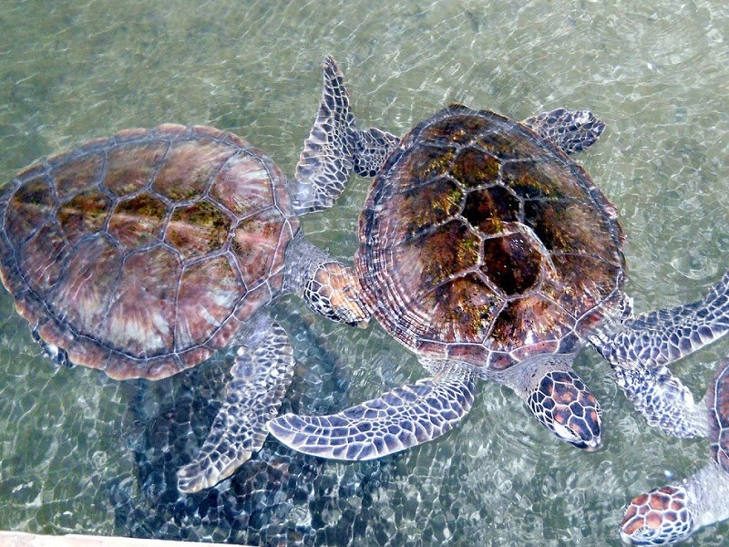

All visitors to Bentota enjoy visiting the Bentota Turtle Hatchery Project. The picturesque golden sands that entice you to our island also offer numerous endangered turtle species, such the Olive Ridley and Leatherback turtles, an alluring nesting site. The project's objective is to preserve and safeguard the eggs against predators and other threats. To find out more about these beautiful and endangered sea creatures, go to the turtle hatchery in Bentota.
|  | WHAT HAPPENS AT THE HATCHERYUntil the eggs hatch and are prepared to swim back home, the turtle hatchery guards the eggs. The group also saves sea turtles who sustain injuries from fishing nets, motors, and other sources while at sea. Before being released back, they are frequently rehabbed. |
VISIT THE BENTOTA TURTLE HATCHERYThe Bentota Turtle Care Center is an excellent place to have fun while discovering and enjoying nature. Since it is participatory and family-friendly, go there while on vacation in Sri Lanka. If you're thinking about taking a trip to Sri Lanka, stop visit the Bentota turtle conservation project to learn more about these kind and graceful marine creatures. |
|